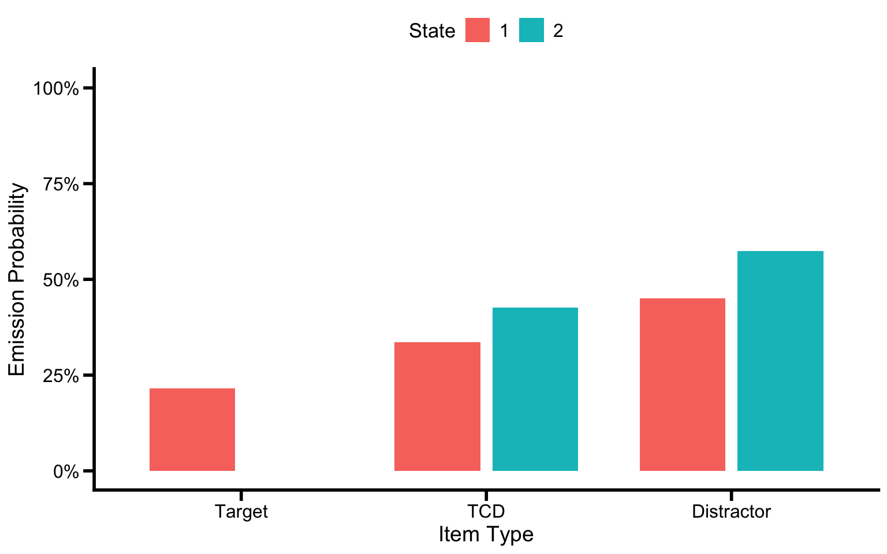
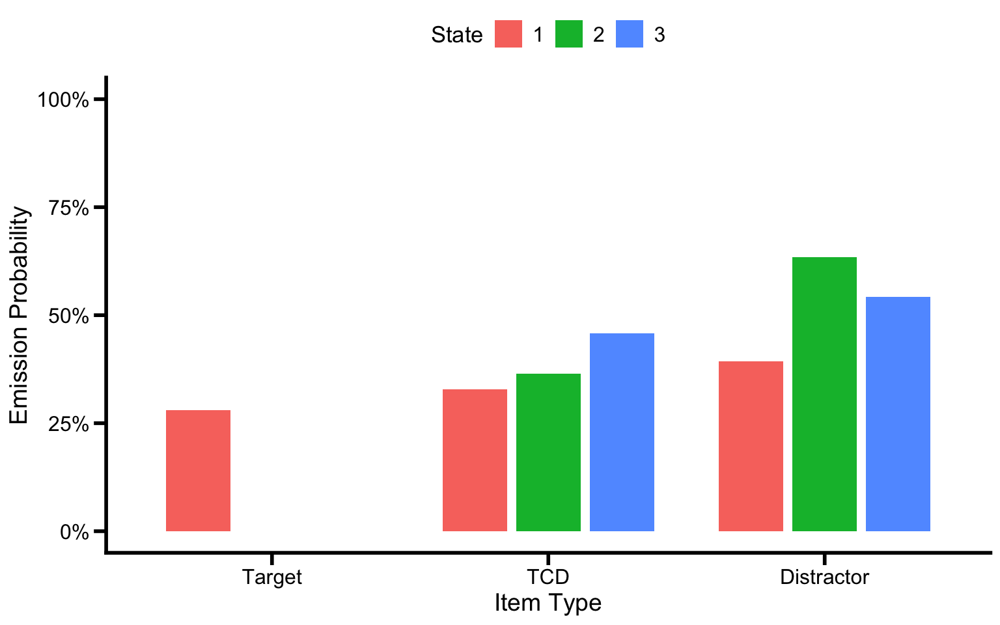
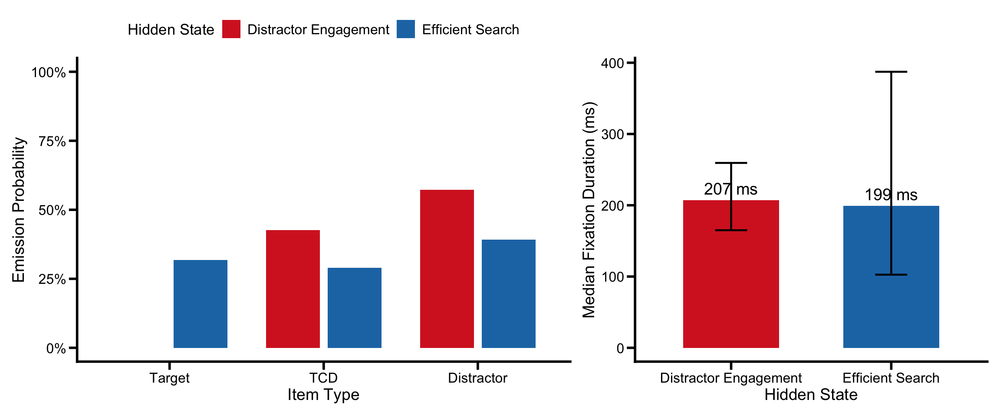
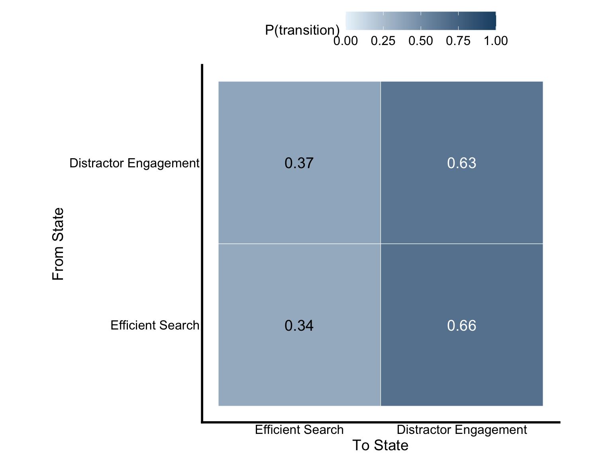
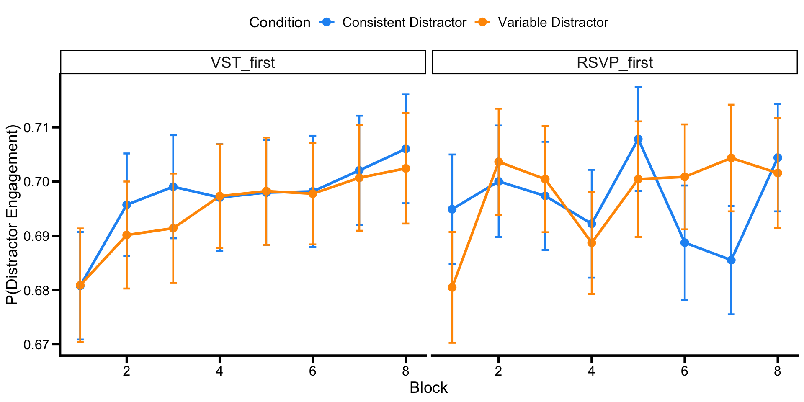
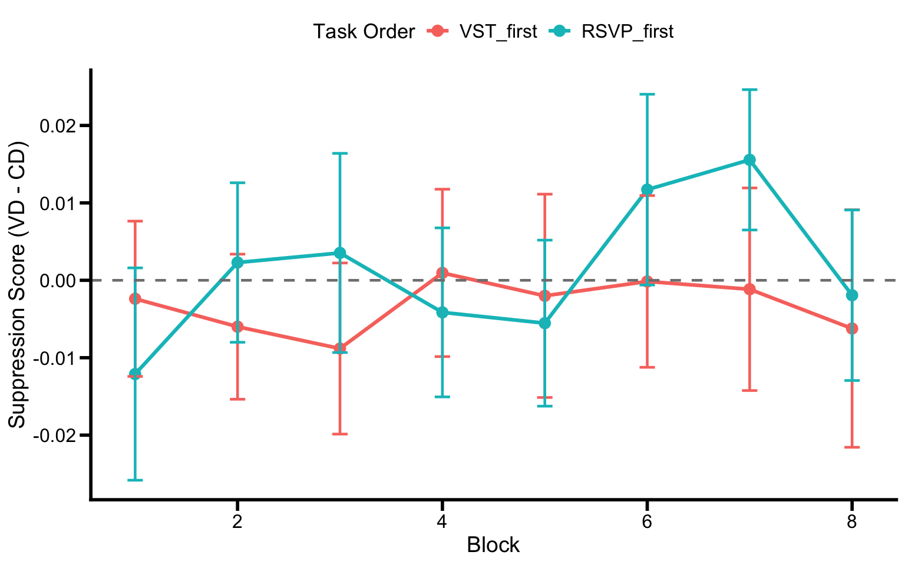
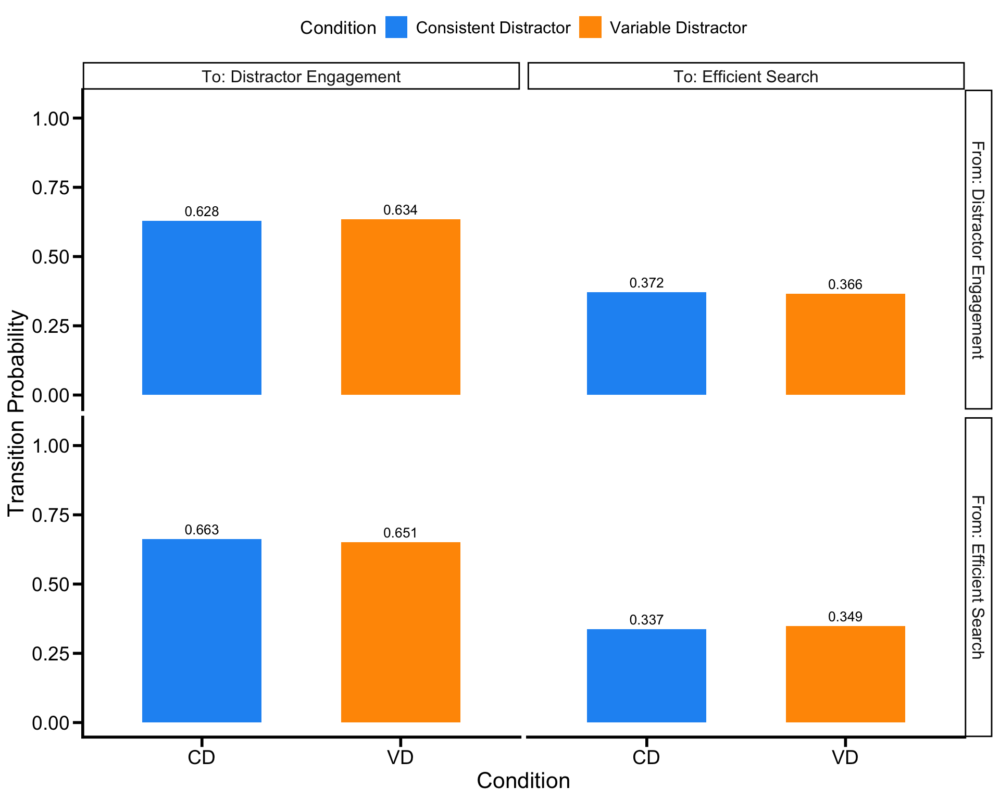
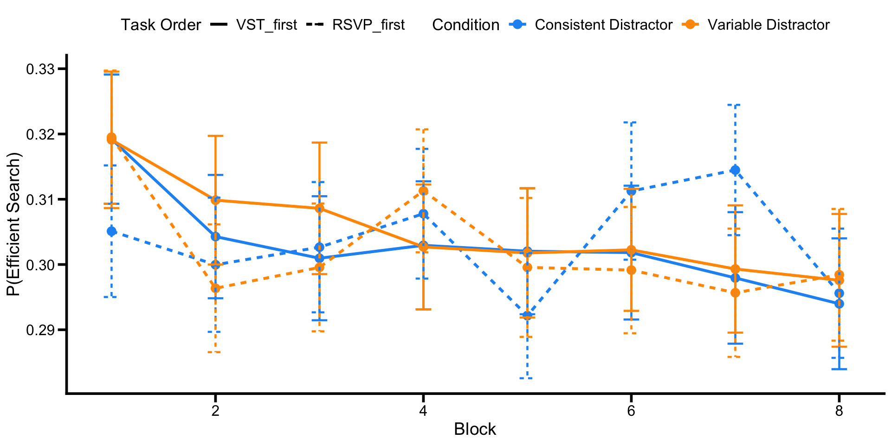
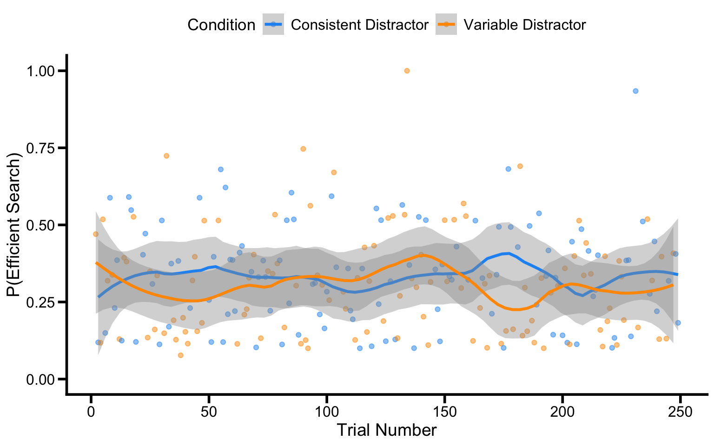

Standard analyses of learned distractor suppression in the attentional-singleton paradigm compute block-level suppression scores (VD - CD) on RT or fixation probability. These scores collapse all trial-by-trial and fixation-level dynamics into a single number per block. A hidden Markov model (HMM) offers a complementary approach: it treats each trial’s fixation sequence as generated by one of several latent attentional states, then tracks how the prevalence of those states shifts across trials and blocks as learning progresses.
Three HMM-specific terms recur throughout. A hidden state is a discrete latent variable that we never observe directly; here, an attentional mode such as efficient search or distractor engagement - that we infer from the pattern of fixations. An emission is the observable signal each state generates; in this analysis, which item is fixated (Target / TCD / Distractor) and how long the fixation lasts. A transition probability is the chance of moving from one hidden state to another on the next fixation. The HMM jointly estimates the emission distributions (what each state “looks like”) and the transition matrix (how states evolve within a trial).
The gaze-contingent design in the Visual Search Task is critical for specifying the model structure. Because participants cannot distinguish target-colored distractors (TCDs) from the target prior to fixation, the hidden states must capture general processing modes, such as efficient target-directed search vs. distractor engagement, that are the same across CD and VD conditions. The suppression signal then manifests as a condition difference in state prevalence. As participants learn to suppress the consistent distractor (CD), the efficient search state should become more prevalent in CD relative to VD. This VD-CD difference in state occupancy is the HMM analog of the standard behavioral suppression score.
This portfolio fits and validates the 2-state joint HMM that Stages 2 and 3 will reuse, evaluating whether it can recover learned distractor suppression as a latent process from the VST fixation data. Specifically, we aim to:
rm(list = ls())
library(tidyverse)## ── Attaching core tidyverse packages ──────────────────────── tidyverse 2.0.0 ──
## ✔ dplyr 1.1.4 ✔ readr 2.1.5
## ✔ forcats 1.0.1 ✔ stringr 1.5.2
## ✔ ggplot2 4.0.0 ✔ tibble 3.3.0
## ✔ lubridate 1.9.4 ✔ tidyr 1.3.1
## ✔ purrr 1.1.0
## ── Conflicts ────────────────────────────────────────── tidyverse_conflicts() ──
## ✖ dplyr::filter() masks stats::filter()
## ✖ dplyr::lag() masks stats::lag()
## ℹ Use the conflicted package (<http://conflicted.r-lib.org/>) to force all conflicts to become errorslibrary(readxl)
library(depmixS4)## Loading required package: nnet
## Loading required package: MASS
##
## Attaching package: 'MASS'
##
## The following object is masked from 'package:dplyr':
##
## select
##
## Loading required package: Rsolnp
## Loading required package: nlme
##
## Attaching package: 'nlme'
##
## The following object is masked from 'package:dplyr':
##
## collapselibrary(knitr)
library(patchwork)##
## Attaching package: 'patchwork'
##
## The following object is masked from 'package:MASS':
##
## areaselect <- dplyr::select
filter <- dplyr::filter
recode <- dplyr::recode # guards against car::recode if `car` is loaded in the session# plot theme
axis_text_size <- 14
axis_tick_text_size <- 12
graph_color <- "black"
axis_tick_length <- 0.25
axis_tick_units <- "cm"
axis_thickness <- 1
manuscript_theme <- theme_classic() +
theme(
axis.line = element_line(linewidth = axis_thickness, colour = graph_color),
axis.title = element_text(size = axis_text_size),
axis.text = element_text(colour = graph_color, size = axis_tick_text_size),
axis.ticks = element_line(linewidth = axis_thickness, colour = graph_color),
axis.ticks.length.y = unit(axis_tick_length, axis_tick_units),
axis.ticks.length.x = unit(axis_tick_length, axis_tick_units),
legend.position = "top",
legend.text = element_text(size = 12),
legend.title = element_text(size = 13),
text = element_text(size = axis_tick_text_size)
)
# State colors
col_efficient <- "#1F77B4"
col_engaged <- "#D62728"
state_colors <- c("Efficient Search" = col_efficient,
"Distractor Engagement" = col_engaged)The fixation data come from the fdata sheet of the VST
summary spreadsheet, which is already fully preprocessed: practice
blocks removed (block_Norm 1-8 only), RT and SRT outliers excluded,
correct trials only, central fixation excluded, and each fixation
classified as Target, TCD, or Distractor. Trials with fewer than 2
fixations are additionally excluded because a single-fixation sequence
provides no transition information for the HMM.
fdata_file <- "summary/VST_DataSummary_SL_EyeTracking_Final.xlsx"
fdata <- read_excel(fdata_file, sheet = "fdata")hmm_data <- fdata %>%
mutate(
subjnum = as.integer(subjnum),
block = as.integer(block),
block_Norm = as.integer(block_Norm),
trial = as.integer(trial),
saccindex = as.integer(saccindex),
Dwell = as.numeric(CURRENT_FIX_DURATION),
# fixation durations are right-skewed — log makes the Gaussian emission a sensible fit
log_dur = log(as.numeric(CURRENT_FIX_DURATION)),
# `obs` is an integer code kept for export readability; depmixS4's multinomial
# response actually consumes the factor `obs_factor`, which is built from `obs`
# below in the model-fitting chunk.
obs = case_when(
curritem == "Target" ~ 1L,
curritem == "TCD" ~ 2L,
curritem == "Distractor" ~ 3L
),
# CD as reference: in the condition-dependent transition model fit later,
# the `conditionVD` coefficient then reads directly as the VD-vs-CD effect.
condition = factor(condition, levels = c("CD", "VD")),
TaskOrder = factor(
ifelse(as.integer(TaskOrder) == 1, "VST_first", "RSVP_first"),
levels = c("VST_first", "RSVP_first")
)
) %>%
group_by(subjnum) %>%
mutate(
# Unique trial key — used later by `ntimes` to mark independent HMM sequences
# so the model resets at trial boundaries instead of treating all data as one chain.
trial_id = paste(subjnum, block, trial, sep = "_"),
trial_num = dense_rank(interaction(block, trial))
) %>%
ungroup() %>%
filter(!is.na(obs), !is.na(log_dur), is.finite(log_dur)) %>%
select(subjnum, TaskOrder, block, block_Norm, trial, trial_num, trial_id, condition, saccindex, curritem, obs, Dwell, log_dur, CURRENT_FIX_X, CURRENT_FIX_Y) %>%
arrange(subjnum, trial_num, saccindex)
# Remove trials with fewer than 2 fixations: a single-fixation sequence has zero
# transitions, so it contributes nothing to the transition-matrix estimate.
trial_counts <- hmm_data %>% count(trial_id, name = "n_fix")
hmm_data <- hmm_data %>%
semi_join(trial_counts %>% filter(n_fix >= 2), by = "trial_id") %>%
arrange(subjnum, trial_num, saccindex)n_subj <- length(unique(hmm_data$subjnum))
trials_per_subj <- hmm_data %>%
distinct(subjnum, trial_id) %>% # One row per trial per participant
count(subjnum) %>%
summarise(M = mean(n), SD = sd(n), Min = min(n), Max = max(n))
trials_per_subj## # A tibble: 1 × 4
## M SD Min Max
## <dbl> <dbl> <int> <int>
## 1 205. 14.2 175 231fix_per_trial <- hmm_data %>%
count(trial_id) %>% # how many fixations in each trial
summarise(M = mean(n), SD = sd(n), Min = min(n), Max = max(n))
fix_per_trial## # A tibble: 1 × 4
## M SD Min Max
## <dbl> <dbl> <int> <int>
## 1 3.47 0.849 2 7The dataset includes 48 participants (24 start the VST first) contributing an average of 205 trials, with 3.47 fixations per trial on average. Trials with fewer than 2 fixations were excluded because single-fixation sequences provide no transition information for the HMM.
obs_freq <- hmm_data %>%
count(condition, curritem) %>% # count fixations by condition × item type
group_by(condition) %>%
mutate(prop = round(n / sum(n), 3)) %>% # proportion within each condition
ungroup()
kable(obs_freq, caption = "Table 1. Fixation counts and proportions by condition and item type.")| condition | curritem | n | prop |
|---|---|---|---|
| CD | Distractor | 8914 | 0.523 |
| CD | TCD | 6540 | 0.384 |
| CD | Target | 1590 | 0.093 |
| VD | Distractor | 8837 | 0.518 |
| VD | TCD | 6673 | 0.391 |
| VD | Target | 1566 | 0.092 |
obs_by_ord <- hmm_data %>%
filter(saccindex <= 4) %>%
count(condition, saccindex, curritem) %>%
group_by(condition, saccindex) %>%
mutate(prop = round(n / sum(n), 3)) %>%
ungroup() %>%
select(-n) %>%
pivot_wider(names_from = curritem, values_from = prop)
kable(obs_by_ord, caption = "Table 2. Fixation proportions by ordinal position (first 4 fixations) and condition.")| condition | saccindex | Distractor | TCD | Target |
|---|---|---|---|---|
| CD | 1 | 0.575 | 0.425 | NA |
| CD | 2 | 0.521 | 0.381 | 0.098 |
| CD | 3 | 0.500 | 0.357 | 0.143 |
| CD | 4 | 0.476 | 0.365 | 0.160 |
| VD | 1 | 0.573 | 0.427 | NA |
| VD | 2 | 0.514 | 0.388 | 0.098 |
| VD | 3 | 0.493 | 0.370 | 0.137 |
| VD | 4 | 0.469 | 0.373 | 0.158 |
Table 1 shows the overall distribution of fixations across item types. Target fixations make up the largest share in both conditions, consistent with strong target-directed guidance. Table 2 breaks this down by ordinal position: the first fixation within a trial reveals the initial attentional capture pattern, while later fixations reflect corrective saccades. The key observation here is that item-type proportions are broadly similar across CD and VD, which is expected — the gaze-contingent design ensures that visual guidance is driven by the target color, not by the distractor’s identity. Any condition differences in attentional allocation should emerge at the level of latent processing modes, which is what the HMM is designed to capture.
We pool CD and VD trials for model fitting because the hidden states represent general processing modes that are shared across conditions. The suppression signal will be captured as a condition difference in state prevalence, not as different emission profiles. The model is also fit pooled across TaskOrder (VST-first vs. RSVP-first), since the latent processing modes should generalize across task order; condition × order trajectories are inspected post hoc in the validation section. Each trial is treated as an independent sequence, with sequence length equal to the number of fixation in that trial.
We start by fitting HMMs using only item type (Target, TCD, Distractor) as the emission variable, to see whether item type alone can separate attentional modes.
# Create the factor emission variable that depmixS4 needs for multinomial responses.
hmm_data$obs_factor <- factor(hmm_data$obs, levels = 1:3,
labels = c("Target", "TCD", "Distractor"))
# Each trial is an independent fixation sequence. depmixS4 needs to know where one sequence ends and the next begins so the HMM resets at trial boundaries, instead of treating the whole dataset as one continuous chain.
# The `ntimes` argument takes a vector of sequence lengths in row order; we use rle on the row-ordered trial_id (count() would sort alphabetically and break the match).
seq_lengths <- rle(as.character(hmm_data$trial_id))$lengths
# Fit 2-state multinomial with item type only.
# family = multinomial("identity") models the emission probabilities directly (rather than via a logit link) — convenient for reading them off
set.seed(42)
mod2_cat <- depmix(obs_factor ~ 1,
data = hmm_data,
nstates = 2,
family = multinomial("identity"),
ntimes = seq_lengths)
fit2_cat <- fit(mod2_cat, verbose = FALSE)## converged at iteration 254 with logLik: -30448.7# Pull the multinomial emission probabilities from each state's response slot.
# In a depmixS4 fit, `@response[[s]][[1]]` is the first emission distribution for state s; with family = multinomial("identity"), coefficients are the emission probabilities directly (no link function to invert).
extract_cat_emissions <- function(fit_model, K) {
em <- data.frame(state = 1:K, p_target = NA, p_tcd = NA, p_distractor = NA)
for (s in 1:K) {
rp <- fit_model@response[[s]][[1]]@parameters$coefficients
em$p_target[s] <- rp[1] # P(Target)
em$p_tcd[s] <- rp[2] # P(TCD)
em$p_distractor[s] <- rp[3] # P(distractor)
}
em
}
em2_cat <- extract_cat_emissions(fit2_cat, 2)
kable(em2_cat, digits = 3, caption = "Table 3a. Emission probabilities: 2-state multinomial model.")| state | p_target | p_tcd | p_distractor |
|---|---|---|---|
| 1 | 0.215 | 0.335 | 0.450 |
| 2 | 0.000 | 0.427 | 0.573 |
em2_cat %>%
mutate(state = factor(state)) %>%
pivot_longer(cols = c(p_target, p_tcd, p_distractor),
names_to = "item", values_to = "probability") %>%
mutate(
item = dplyr::recode(item,
"p_target" = "Target", "p_tcd" = "TCD", "p_distractor" = "Distractor"),
item = factor(item, levels = c("Target", "TCD", "Distractor"))
) %>%
ggplot(aes(x = item, y = probability, fill = state)) +
geom_col(position = position_dodge(0.8), width = 0.7) +
scale_y_continuous(labels = scales::percent_format(), limits = c(0, 1)) +
labs(x = "Item Type", y = "Emission Probability", fill = "State") +
manuscript_theme
Figure 1. Emission probabilities for the 2-state multinomial-only HMM (item type only). The two states have nearly identical item-type profiles, indicating that item type alone does not separate distinct attentional modes.
As shown in Table 3a and the bar plot, the 2-state multinomial model produced nearly identical emission profiles across the two states. Both states show similar proportions of Target, TCD, and Distractor fixations, meaning the model is not finding meaningful state separation based on item type alone. This failure is theoretically informative: with only ~3.47 fixations per trial, there is not enough within-trial sequential variability in fixation location for the EM algorithm to distinguish different attentional modes. The item-type distribution is too homogeneous across fixations within a trial to support state separation.
We shift to the 3-state model to see if adding a third state allows the model to find distinct attentional modes from item type alone.
# 3-state multinomial
set.seed(42)
mod3_cat <- depmix(obs_factor ~ 1,
data = hmm_data,
nstates = 3,
family = multinomial("identity"),
ntimes = seq_lengths)
fit3_cat <- fit(mod3_cat, verbose = FALSE)em3_cat <- extract_cat_emissions(fit3_cat, 3)
kable(em3_cat, digits = 3,
caption = "Table 3b. Emission probabilities: 3-state multinomial model.")| state | p_target | p_tcd | p_distractor |
|---|---|---|---|
| 1 | 0.279 | 0.328 | 0.393 |
| 2 | 0.000 | 0.365 | 0.635 |
| 3 | 0.000 | 0.458 | 0.542 |
em3_cat %>%
mutate(state = factor(state)) %>%
pivot_longer(cols = c(p_target, p_tcd, p_distractor),
names_to = "item", values_to = "probability") %>%
mutate(
item = dplyr::recode(item,
"p_target" = "Target", "p_tcd" = "TCD", "p_distractor" = "Distractor"),
item = factor(item, levels = c("Target", "TCD", "Distractor"))
) %>%
ggplot(aes(x = item, y = probability, fill = state)) +
geom_col(position = position_dodge(0.8), width = 0.7) +
scale_y_continuous(labels = scales::percent_format(), limits = c(0, 1)) +
labs(x = "Item Type", y = "Emission Probability", fill = "State") +
manuscript_theme
Figure 2. Emission probabilities for the 3-state multinomial-only HMM. Adding a third state separates a target-bearing state from two near-redundant non-target states, but does not cleanly recover a two-mode target / non-target structure.
cat_comp <- data.frame(
Model = c("2-state multinomial", "3-state multinomial"),
logLik = c(logLik(fit2_cat), logLik(fit3_cat)), # higher = better fit to data
AIC = c(AIC(fit2_cat), AIC(fit3_cat)), # lower = better
BIC = c(BIC(fit2_cat), BIC(fit3_cat)) # lower = better
)
kable(cat_comp, digits = 1, caption = "Table 4. Model comparison for multinomial-only HMMs.")| Model | logLik | AIC | BIC |
|---|---|---|---|
| 2-state multinomial | -30448.7 | 60911.4 | 60970.5 |
| 3-state multinomial | -30447.0 | 60921.9 | 61040.1 |
Table 3b and the bar plot show that the 3-state model does separate target-bearing fixations from pure non-target fixations: only one of the three states contains any target activity (P(Target) = 0.279), while the other two states each have P(Target) = 0 and differ only in their relative weighting of TCD versus Distractor fixations. However, even the target-bearing state’s P(Target) is below 30%, and the model splits the non-target space into two near-redundant states rather than producing the clean two-mode structure we want for tracking learning. Table 4 shows the 3-state model has a higher log-likelihood than the 2-state, as expected with more parameters, but the extra state buys redundancy in the non-target space rather than separation along the target / non-target axis. This motivates adding fixation duration as a second emission variable in the joint model below — duration provides the additional signal that lets a 2-state model recover a clean target / non-target split.
We now fit a joint HMM, meaning each fixation contributes two observations simultaneously rather than one: the item type (modelled as a multinomial, as before) and the fixation duration (modelled as a Gaussian on the log scale). The two emissions are conditionally independent given the hidden state - the state determines both the item-type distribution and the duration distribution, and the model estimates them jointly. Adding duration gives the model the leverage to distinguish fast, efficient search from slower, distractor-engaged processing.
Estimation uses the EM algorithm, which iteratively improves the likelihood but only guarantees convergence to a local maximum; different starting values can land at different solutions. To reduce the chance of reporting a poor local fit, we run 10 random restarts and keep the model with the highest log-likelihood.
best_fit <- NULL # placeholder - no successful fit yet
best_ll <- -Inf # set to negative infinity so any real logLik beats it
for (r in 1:10) { # 10 different random starting points
set.seed(r * 7 + 13)
tryCatch({
mod_joint <- depmix(
list(obs_factor ~ 1, log_dur ~ 1), # two emissions: item type + log duration
data = hmm_data,
nstates = 2,
family = list(multinomial("identity"), gaussian()),
ntimes = seq_lengths # how many fixation in each trial
)
this_fit <- fit(mod_joint, verbose = FALSE) # run EM algorithm to estimate parameters
this_ll <- as.numeric(logLik(this_fit)) # log-likelihood
if (this_ll > best_ll) { # is this better than all previous restarts?
best_ll <- this_ll # update best log-likelihood
best_fit <- this_fit # save this model as current best
}
}, error = function(e) {message("Restart", r, "failed: ", e$message)})
}## converged at iteration 88 with logLik: -44104.59
## converged at iteration 89 with logLik: -44104.59
## converged at iteration 87 with logLik: -44104.59
## converged at iteration 87 with logLik: -44104.59
## converged at iteration 88 with logLik: -44104.59
## converged at iteration 88 with logLik: -44104.59
## converged at iteration 89 with logLik: -44104.59
## converged at iteration 88 with logLik: -44104.59
## converged at iteration 88 with logLik: -44104.59
## converged at iteration 88 with logLik: -44104.59fit_primary <- best_fit # after all 10 restarts, keep the single best model # LogLik / AIC / BIC are not comparable between the multinomial-only and joint models (different observation spaces); they are reported here for reference only. State separation, not fit indices, motivates adopting the joint model.
full_comp <- data.frame(
Model = c("2-state multinomial (item only)",
"3-state multinomial (item only)",
"2-state joint (item + duration)"),
logLik = c(logLik(fit2_cat), logLik(fit3_cat), logLik(fit_primary)),
AIC = c(AIC(fit2_cat), AIC(fit3_cat), AIC(fit_primary)),
BIC = c(BIC(fit2_cat), BIC(fit3_cat), BIC(fit_primary))
)
kable(full_comp, digits = 1, caption = "Table 5. Fit indices for the three candidate models.")| Model | logLik | AIC | BIC |
|---|---|---|---|
| 2-state multinomial (item only) | -30448.7 | 60911.4 | 60970.5 |
| 3-state multinomial (item only) | -30447.0 | 60921.9 | 61040.1 |
| 2-state joint (item + duration) | -44104.6 | 88231.2 | 88324.0 |
Table 5 reports model-fit indices for all three models, but a direct logLik / AIC / BIC comparison between the multinomial-only and joint models is not valid: the multinomial-only models score the likelihood of a sequence of item-type categories, whereas the joint model also scores the log-density of fixation duration, so the two likelihoods are computed over different observation spaces. Within the multinomial-only family, the 3-state model has a higher logLik than the 2-state, as expected with more parameters, but neither model produced qualitatively distinct emission profiles (Tables 3a–3b). The case for the 2-state joint model rests instead on state separation: adding fixation duration yields two qualitatively different states - one with elevated P(Target) and short fixations, the other with elevated P(TCD)/P(Distractor) and longer fixations (Table 6). Item type alone could not produce this separation given the short fixation sequences (~3 per trial); duration provides the discriminative signal. The 2-state joint model is adopted as the primary model for all subsequent analyses.
# Emission probabilities (response 1 = multinomial, response 2 = Gaussian)
# table to hold emission params for each state
emission_df <- data.frame(
state = 1:2,
p_target = NA, p_tcd = NA, p_distractor = NA,
median_dur_ms = NA, sd_log_dur = NA
)
for (s in 1:2) { # loop over for both states
rp_cat <- fit_primary@response[[s]][[1]]@parameters$coefficients # multinomial probs
rp_gauss <- fit_primary@response[[s]][[2]]@parameters # Gaussian params
emission_df$p_target[s] <- rp_cat[1] # P(fixating Target) in state s
emission_df$p_tcd[s] <- rp_cat[2] # P(fixating TCD) in state s
emission_df$p_distractor[s] <- rp_cat[3] # P(fixating Distractor) in state s
# exp(mu_log) is the median (not arithmetic mean) of the log-normal duration distribution; its derivation requires no sigma correction. The arithmetic mean
# would be exp(mu + sigma^2/2). Reporting the median keeps the value consistent
# with the asymmetric +/- 1 SD bounds plotted in Figure 3.
emission_df$median_dur_ms[s] <- exp(rp_gauss$coefficients)
emission_df$sd_log_dur[s] <- rp_gauss$sd # SD on log scale
}
# Label states by content, not by index. HMM state indices (1, 2) are arbitrary and can flip between fits / restarts (the "label-switching" problem), so we identify the Efficient Search state as whichever has higher P(Target).
efficient_state <- which.max(emission_df$p_target) # state index with more target fixations
engaged_state <- setdiff(1:2, efficient_state) # the other state
emission_df$state_label <- ifelse(
emission_df$state == efficient_state,
"Efficient Search", "Distractor Engagement"
)
# 2x2 Transition matrix.
# @transition[[i]] holds the *from-state i* row of the transition model.
# Under the baseline (no-covariate) spec, @parameters$coefficients is just a length-K vector of probabilities — the row of the K x K transition matrix.
trans_mat <- matrix(NA, 2, 2)
for (i in 1:2) {
trans_mat[i, ] <- fit_primary@transition[[i]]@parameters$coefficients
}
colnames(trans_mat) <- rownames(trans_mat) <- emission_df$state_label
# Initial state probabilities - what state a trial most likely starts in
init_pars <- getpars(fit_primary) # all model parameters as a flat vector
# depmixS4 stores parameters in a fixed order: the K initial-state probabilities first, then transition parameters, then emission parameters.
# With K = 2, indices 1:2 are P(start in state 1) and P(start in state 2).
init_probs <- init_pars[1:2]em_display <- emission_df %>%
select(State = state_label,
`P(Target)` = p_target,
`P(TCD)` = p_tcd,
`P(Distractor)` = p_distractor,
`Median Duration (ms)` = median_dur_ms,
`SD log(dur)` = sd_log_dur)
kable(em_display, digits = 3, caption = "Table 6. Emission parameters for each hidden state (joint model).")| State | P(Target) | P(TCD) | P(Distractor) | Median Duration (ms) | SD log(dur) |
|---|---|---|---|---|---|
| Efficient Search | 0.319 | 0.290 | 0.391 | 199.371 | 0.664 |
| Distractor Engagement | 0.000 | 0.427 | 0.573 | 206.888 | 0.226 |
p_item <- emission_df %>%
pivot_longer(cols = c(p_target, p_tcd, p_distractor),
names_to = "item", values_to = "probability") %>%
mutate(
item = dplyr::recode(item,
"p_target" = "Target", "p_tcd" = "TCD", "p_distractor" = "Distractor"),
item = factor(item, levels = c("Target", "TCD", "Distractor"))
) %>%
ggplot(aes(x = item, y = probability, fill = state_label)) +
geom_col(position = position_dodge(0.8), width = 0.7) +
scale_fill_manual(values = state_colors) +
scale_y_continuous(labels = scales::percent_format(), limits = c(0, 1)) +
labs(x = "Item Type", y = "Emission Probability", fill = "Hidden State") +
manuscript_theme
p_dur <- emission_df %>%
mutate(
dur_lo = exp(log(median_dur_ms) - sd_log_dur),
dur_hi = exp(log(median_dur_ms) + sd_log_dur)
) %>%
ggplot(aes(x = state_label, y = median_dur_ms, fill = state_label)) +
geom_col(width = 0.6) +
geom_errorbar(aes(ymin = dur_lo, ymax = dur_hi), width = 0.2, linewidth = 0.8) +
geom_text(aes(label = sprintf("%.0f ms", median_dur_ms)),
vjust = -0.5, size = 5) +
scale_fill_manual(values = state_colors) +
labs(x = "Hidden State", y = "Median Fixation Duration (ms)", fill = "Hidden State") +
manuscript_theme +
theme(legend.position = "none")
p_item + p_dur + plot_layout(widths = c(1.4, 1))
Figure 3. Emission profiles of the 2-state joint HMM (item type + log fixation duration). Left: item-type emission probabilities by state. Right: median fixation duration by state (back-transformed from the Gaussian on log duration), with the 16th–84th percentile bounds (i.e. exp(μ ± σ) on the log scale).
The 2-state joint model recovered two qualitatively distinct states.
The Efficient Search state is the only one to contain target fixations:
P(Target) = 0.319, with the remaining mass split between TCD (P = 0.290)
and Distractor (P = 0.391). The Distractor Engagement state contains
no target fixations (P(Target) = 0.000), with the mass on TCD
(P = 0.427) and Distractor (P = 0.573). Median fixation durations were
similar (Efficient Mdn = 199 ms; Engaged Mdn = 207 ms — a difference of
only ~8 ms), but the two states differed substantially in duration
spread on the log scale (Efficient SD = 0.66; Engaged SD = 0.23).
Because fixation durations are log-normally distributed, the
back-transformed exp(μ_log) is the median rather than the
arithmetic mean of the duration distribution; reporting the median keeps
the central-tendency value consistent with the asymmetric percentile
bands shown in Figure 3. The states are therefore distinguished
primarily by item-type composition — specifically the presence or
absence of target fixations — and secondarily by the dispersion of
fixation durations rather than by their central tendency. The wider
duration distribution of the Efficient Search state is what gives the
joint model the leverage to anchor a coherent target-bearing state in
just two states, where the multinomial-only 2-state model could not.
The transition matrix is read row-wise: each row gives the probabilities of moving to each state on the next fixation, conditional on the current state. Diagonal entries (e.g. Efficient → Efficient) are self-persistence; off-diagonal entries are switches. Each row sums to 1.
kable(round(trans_mat, 3),
caption = "Table 7. Transition matrix between hidden states. Rows = from-state, columns = to-state; rows sum to 1.")| Efficient Search | Distractor Engagement | |
|---|---|---|
| Efficient Search | 0.342 | 0.658 |
| Distractor Engagement | 0.369 | 0.631 |
# Reshape transition matrix for heatmap plotting
trans_long <- as.data.frame(trans_mat) %>%
mutate(from = rownames(trans_mat)) %>%
pivot_longer(-from, names_to = "to", values_to = "prob") %>%
mutate(
from = factor(from, levels = emission_df$state_label),
to = factor(to, levels = emission_df$state_label)
)
ggplot(trans_long, aes(x = to, y = from, fill = prob)) +
geom_tile(color = "white") +
geom_text(aes(label = sprintf("%.2f", prob)),
color = ifelse(trans_long$prob > 0.5, "white", "black"), size = 5) +
scale_fill_gradient(low = "#EBF5FB", high = "#1B4F72", limits = c(0, 1)) +
labs(x = "To State", y = "From State", fill = "P(transition)") +
coord_equal() +
manuscript_theme +
theme(axis.ticks = element_blank(),
legend.key.width = unit(1, "cm"))
Figure 4. Transition probability matrix for the 2-state joint HMM. Rows = from-state, columns = to-state; rows sum to 1. Distractor Engagement is more self-persistent than Efficient Search.
The transition matrix (Table 7) shows asymmetric self-persistence rather than two stable modes. From the Efficient Search state, the probability of remaining is only 0.342 — fixations in Efficient Search are more likely to switch to Distractor Engagement (P = 0.658) than to stay. The Distractor Engagement state is more persistent, with P(stay) = 0.631. Read jointly, these probabilities mean that Distractor Engagement acts as the dominant attractor: from either state the next fixation is more likely to land in Distractor Engagement than in Efficient Search. Non-target fixations therefore dominate the search sequence, and the target-bearing Efficient Search state functions as a brief, transition-prone event embedded within a longer non-target sequence rather than a sustained processing mode.
The initial state probabilities were P(Efficient Search) = 0.110 and P(Distractor Engagement) = 0.890. These indicate the model’s estimate of which state a trial is most likely to begin in, averaged across all trials and conditions.
If the HMM captures meaningful attentional states, then participants should show more time in Efficient Search on CD trials, where they can learn to suppress the consistent distractor, rather than on VD trials. The VD - CD difference in P(Distractor Engagement) should be positive, reflecting more engagement with distractors when they cannot be predicted. This is the HMM analog of the standard behavioral suppression score.
# For each fixation the model returns a smoothed posterior distribution over states
# P(state | the entire fixation sequence for that trial), computed by the forward-backward
# algorithm. We keep the soft probabilities (`p_efficient`, `p_engaged`) for downstream
# averaging. `post$state` (saved as `decoded`) is the Viterbi-decoded path: the single
# most likely sequence of states given the whole trial — not the per-fixation argmax of
# the smoothed marginals (the two can differ when transitions are informative).
post <- depmixS4::posterior(fit_primary)## Warning in .local(object, ...): Argument 'type' not specified and will default
## to 'viterbi'. This default may change in future releases of depmixS4. Please
## see ?posterior for alternative options.hmm_data$p_efficient <- post[, paste0("S", efficient_state)] # P(Efficient) per fixation
hmm_data$p_engaged <- post[, paste0("S", engaged_state)] # P(Engaged) per fixation
hmm_data$decoded <- ifelse(post$state == efficient_state,
"Efficient Search", "Distractor Engagement") # Viterbi-decoded state
# Trial-level: mean P(Efficient Search) per trial
trial_states <- hmm_data %>%
group_by(subjnum, TaskOrder, trial_num, trial_id, condition, block_Norm) %>%
summarise(
p_efficient = mean(p_efficient),
p_engaged = mean(p_engaged),
n_fix = n(),
.groups = "drop"
)
# Block-level averages
block_states <- trial_states %>%
group_by(TaskOrder, condition, block_Norm) %>%
summarise(
M_efficient = mean(p_efficient),
SE_efficient = sd(p_efficient) / sqrt(n()),
M_engaged = mean(p_engaged),
SE_engaged = sd(p_engaged) / sqrt(n()),
.groups = "drop"
)
# HMM suppression score: VD - CD in P(Distractor Engagement)
# For each participant × block, get mean P(Engaged) for CD and VD separately
hmm_suppress <- trial_states %>%
group_by(subjnum, TaskOrder, block_Norm, condition) %>%
summarise(M_engaged = mean(p_engaged), .groups = "drop") %>%
pivot_wider(names_from = condition, values_from = M_engaged) %>%
mutate(suppress_score = VD - CD)
# Block-level average suppression score
block_suppress <- hmm_suppress %>%
group_by(TaskOrder, block_Norm) %>%
summarise(
M_score = mean(suppress_score, na.rm = TRUE),
SE_score = sd(suppress_score, na.rm = TRUE) / sqrt(sum(!is.na(suppress_score))),
.groups = "drop"
)participant_suppress <- hmm_suppress %>%
group_by(subjnum, TaskOrder) %>%
summarise(suppress_score = mean(suppress_score, na.rm = TRUE), .groups = "drop")
overall_suppress <- participant_suppress %>%
group_by(TaskOrder) %>%
summarise(
M = mean(suppress_score, na.rm = TRUE),
SD = sd(suppress_score, na.rm = TRUE),
tt = list(t.test(suppress_score)),
.groups = "drop"
) %>%
mutate(
t = map_dbl(tt, ~ .x$statistic),
df = map_dbl(tt, ~ .x$parameter),
p = map_dbl(tt, ~ .x$p.value)
) %>%
select(-tt)
kable(overall_suppress, digits = c(0, 3, 3, 2, 0, 4), caption = "Table 8. Overall HMM suppression score (VD - CD) by task order. Positive values indicate suppression.")| TaskOrder | M | SD | t | df | p |
|---|---|---|---|---|---|
| VST_first | -0.003 | 0.024 | -0.66 | 23 | 0.5142 |
| RSVP_first | 0.001 | 0.024 | 0.24 | 23 | 0.8111 |
ggplot(block_states,
aes(x = block_Norm, y = M_engaged, color = condition,
ymin = M_engaged - SE_engaged,
ymax = M_engaged + SE_engaged)) +
geom_line(linewidth = 1.1) +
geom_point(size = 3) +
geom_errorbar(width = 0.15, linewidth = 0.8) +
facet_wrap(~ TaskOrder) +
scale_color_manual(
values = c("CD" = "#2196F3", "VD" = "#FF9800"),
labels = c("CD" = "Consistent Distractor", "VD" = "Variable Distractor")) +
labs(x = "Block", y = "P(Distractor Engagement)", color = "Condition") +
manuscript_theme +
theme(strip.text = element_text(size = 14))
Figure 5. P(Distractor Engagement) across blocks by condition, faceted by task order. If suppression is learned, CD should show a steeper decline than VD across blocks, since participants can learn to suppress the predictable singleton in CD but not the unpredictable one in VD.
ggplot(block_suppress,
aes(x = block_Norm, y = M_score,
ymin = M_score - SE_score, ymax = M_score + SE_score,
color = TaskOrder)) +
geom_line(linewidth = 1.1) +
geom_point(size = 3) +
geom_errorbar(width = 0.15, linewidth = 0.8) +
geom_hline(yintercept = 0, linetype = "dashed", color = "gray50", linewidth = 0.8) +
labs(x = "Block", y = "Suppression Score (VD - CD)",
color = "Task Order") +
manuscript_theme
Figure 6. Block-level HMM suppression score (VD - CD in P(Distractor Engagement)) across blocks, by task order. Values above the dashed zero line indicate blocks where suppression was present; an upward trend would suggest growing suppression with experience.
Table 8 reports the overall HMM suppression score (VD - CD in P(Distractor Engagement)) by task order, tested against zero with a one-sample t-test. Both task orders showed positive but small VD - CD differences (Table 8), aligning with the expected direction if suppression of the consistent distractor has been learned, though the magnitude is modest at the group level.
The first figure above plots P(Distractor Engagement) across blocks, separately for CD and VD, faceted by task order. If suppression develops with experience, CD should show a steeper decline in P(Distractor Engagement) across blocks compared to VD, because participants can learn to suppress the predictable singleton in CD but not the unpredictable one in VD. The second figure plots the block-level suppression score (VD - CD) directly. Values above the dashed zero line indicate blocks where suppression was present. An upward trend across blocks would suggest that the suppression signal grows as participants accumulate experience with the consistent distractor.
The post-hoc VD - CD comparison above treats the HMM as a preprocessing step: it converts fixation sequences into state occupancy proportions, and then the condition comparison happens outside the model. A more principled approach embeds the suppression signal directly in the model by allowing the transition probabilities to depend on condition. The emissions remain pooled, but the probability of transitioning into Efficient Search versus staying in Distractor Engagement can differ between CD and VD.
If learned suppression is present, the model should estimate that in CD trials, participants transition into Efficient Search more readily and are less likely to fall back into Distractor Engagement, relative to VD trials. The condition effect on transitions is the suppression signal expressed as a model parameter rather than a post-hoc subtraction.
We fit three models: (a) the baseline pooled model with no covariates on transitions (~ 1), (b) a model with condition as a covariate on transitions (~ condition), and (c) a model that also includes block to capture the learning trajectory (~ condition + block_Norm).
hmm_data$block_Norm_c <- scale(hmm_data$block_Norm, scale = FALSE) # center block
# Model (b): condition-dependent transitions (joint emissions)
best_cond_fit <- NULL
best_cond_ll <- -Inf
for (r in 1:10) {
set.seed(r * 7 + 13)
tryCatch({
mod_cond <- depmix(
list(obs_factor ~ 1, log_dur ~ 1),
data = hmm_data,
nstates = 2,
family = list(multinomial("identity"), gaussian()),
ntimes = seq_lengths,
transition = ~ condition)
this_fit <- fit(mod_cond, verbose = FALSE)
this_ll <- as.numeric(logLik(this_fit))
if (this_ll > best_cond_ll) {
best_cond_ll <- this_ll
best_cond_fit <- this_fit
}
}, error = function(e) {})
}## converged at iteration 89 with logLik: -44104.43
## converged at iteration 90 with logLik: -44104.43
## converged at iteration 88 with logLik: -44104.43
## converged at iteration 88 with logLik: -44104.43
## converged at iteration 89 with logLik: -44104.43
## converged at iteration 89 with logLik: -44104.43
## converged at iteration 90 with logLik: -44104.43
## converged at iteration 89 with logLik: -44104.43
## converged at iteration 89 with logLik: -44104.43
## converged at iteration 89 with logLik: -44104.43fit_cond <- best_cond_fit
# Model (c): condition + block on transitions (joint emissions)
best_cb_fit <- NULL
best_cb_ll <- -Inf
for (r in 1:10) {
set.seed(r * 7 + 13)
tryCatch({
mod_cb <- depmix(
list(obs_factor ~ 1, log_dur ~ 1),
data = hmm_data,
nstates = 2,
family = list(multinomial("identity"), gaussian()),
ntimes = seq_lengths,
transition = ~ condition + block_Norm_c)
this_fit <- fit(mod_cb, verbose = FALSE)
this_ll <- as.numeric(logLik(this_fit))
if (this_ll > best_cb_ll) {
best_cb_ll <- this_ll
best_cb_fit <- this_fit
}
}, error = function(e) {})
}## converged at iteration 89 with logLik: -44100.42
## converged at iteration 91 with logLik: -44100.42
## converged at iteration 89 with logLik: -44100.42
## converged at iteration 90 with logLik: -44100.42
## converged at iteration 90 with logLik: -44100.42
## converged at iteration 90 with logLik: -44100.42
## converged at iteration 90 with logLik: -44100.42
## converged at iteration 90 with logLik: -44100.42
## converged at iteration 90 with logLik: -44100.42
## converged at iteration 89 with logLik: -44100.42fit_cond_block <- best_cb_fitcond_comp <- data.frame(
Model = c("Baseline (transitions ~ 1)",
"Condition (transitions ~ condition)",
"Condition + Block (transitions ~ condition + block)"),
logLik = c(as.numeric(logLik(fit_primary)),
as.numeric(logLik(fit_cond)),
as.numeric(logLik(fit_cond_block))),
AIC = c(AIC(fit_primary), AIC(fit_cond), AIC(fit_cond_block)),
BIC = c(BIC(fit_primary), BIC(fit_cond), BIC(fit_cond_block)),
npar = c(length(getpars(fit_primary)),
length(getpars(fit_cond)),
length(getpars(fit_cond_block)))
)
kable(cond_comp, digits = 1,
caption = "Table 9. Comparison of transition model specifications (all with joint emissions). Lower AIC/BIC = better fit.")| Model | logLik | AIC | BIC | npar |
|---|---|---|---|---|
| Baseline (transitions ~ 1) | -44104.6 | 88231.2 | 88324.0 | 16 |
| Condition (transitions ~ condition) | -44104.4 | 88234.9 | 88344.5 | 20 |
| Condition + Block (transitions ~ condition + block) | -44100.4 | 88230.8 | 88357.4 | 24 |
# Defensive check; The softmax helper below assumes a specific shape for the transition coefficients (n_predictors x n_states, possibly with the reference to-state column dropped).
# depmixS4 stores this slightly differently across versions, so we print the raw structure once to confirm the helper is indexing it correctly before relying on it.
str(fit_cond@transition[[1]]@parameters$coefficients)## num [1:2, 1:2] 0 0 0.6759 -0.0521
## - attr(*, "dimnames")=List of 2
## ..$ : chr [1:2] "(Intercept)" "conditionVD"
## ..$ : chr [1:2] "St1" "St2"When transition probabilities depend on a covariate (here, condition), depmixS4 no longer reports them as a single 2×2 matrix. Instead, it stores regression coefficients on a logit scale relative to a reference to-state. To get back the interpretable probability of moving to each to-state, we plug in CD = 0 and VD = 1, sum the contributions on the logit scale, and apply the softmax (i.e. exponentiate and normalise so each row sums to 1). The function below does this for one from-state at a time.
# Compute transition probabilities for CD vs VD via multinomial-logit softmax.
# depmixS4 stores transition coefficients as an n_predictors x n_states matrix (rows = predictors [Intercept, conditionVD], cols = to-states). When the reference column is dropped (matrix has n_states - 1 cols), we re-insert a zero column so softmax gives the correct probabilities.
get_transition_probs <- function(fit_model, state_from, n_states = 2) {
coef <- fit_model@transition[[state_from]]@parameters$coefficients
if (!is.matrix(coef)) coef <- matrix(coef, ncol = 1)
if (ncol(coef) < n_states) coef <- cbind(0, coef) # reference = first to-state
X_cd <- matrix(c(1, 0), nrow = 1) # (Intercept, conditionVD = 0)
X_vd <- matrix(c(1, 1), nrow = 1) # (Intercept, conditionVD = 1)
eta_cd <- as.numeric(X_cd %*% coef)
eta_vd <- as.numeric(X_vd %*% coef)
p_cd <- exp(eta_cd) / sum(exp(eta_cd))
p_vd <- exp(eta_vd) / sum(exp(eta_vd))
data.frame(
from = state_from,
CD_to_S1 = p_cd[1], CD_to_S2 = p_cd[2],
VD_to_S1 = p_vd[1], VD_to_S2 = p_vd[2]
)
}
trans_cd_vd <- bind_rows(
get_transition_probs(fit_cond, 1),
get_transition_probs(fit_cond, 2)
)
# Echo the per-state coefficients on the linear-predictor scale for inspection.
for (s in 1:2) {
coef_s <- fit_cond@transition[[s]]@parameters$coefficients
if (!is.matrix(coef_s)) coef_s <- matrix(coef_s, ncol = 1)
cat(sprintf("From State %d (%s):\n", s, emission_df$state_label[s]))
print(round(coef_s, 3))
cat("\n")
}## From State 1 (Efficient Search):
## St1 St2
## (Intercept) 0 0.676
## conditionVD 0 -0.052
##
## From State 2 (Distractor Engagement):
## St1 St2
## (Intercept) 0 0.525
## conditionVD 0 0.026# Display table
s1_label <- emission_df$state_label[1]
s2_label <- emission_df$state_label[2]
trans_display <- data.frame(
`From State` = emission_df$state_label,
check.names = FALSE
)
trans_display[[paste0("CD -> ", s1_label)]] <- c(trans_cd_vd$CD_to_S1[1], trans_cd_vd$CD_to_S1[2])
trans_display[[paste0("CD -> ", s2_label)]] <- c(trans_cd_vd$CD_to_S2[1], trans_cd_vd$CD_to_S2[2])
trans_display[[paste0("VD -> ", s1_label)]] <- c(trans_cd_vd$VD_to_S1[1], trans_cd_vd$VD_to_S1[2])
trans_display[[paste0("VD -> ", s2_label)]] <- c(trans_cd_vd$VD_to_S2[1], trans_cd_vd$VD_to_S2[2])
kable(trans_display, digits = 3,
caption = "Table 10. Transition probabilities by condition. If suppression is present, CD should show higher probability of transitioning into Efficient Search.")| From State | CD -> Efficient Search | CD -> Distractor Engagement | VD -> Efficient Search | VD -> Distractor Engagement |
|---|---|---|---|---|
| Efficient Search | 0.337 | 0.663 | 0.349 | 0.651 |
| Distractor Engagement | 0.372 | 0.628 | 0.366 | 0.634 |
trans_plot_df <- data.frame(
from = rep(emission_df$state_label, each = 4),
to = rep(rep(emission_df$state_label, each = 2), 2),
condition = rep(c("CD", "VD"), 4),
prob = c(
trans_cd_vd$CD_to_S1[1], trans_cd_vd$VD_to_S1[1],
trans_cd_vd$CD_to_S2[1], trans_cd_vd$VD_to_S2[1],
trans_cd_vd$CD_to_S1[2], trans_cd_vd$VD_to_S1[2],
trans_cd_vd$CD_to_S2[2], trans_cd_vd$VD_to_S2[2]
)
)
ggplot(trans_plot_df,
aes(x = condition, y = prob, fill = condition)) +
geom_col(width = 0.6) +
geom_text(aes(label = sprintf("%.3f", prob)),
vjust = -0.5, size = 3.5) +
facet_grid(from ~ to,
labeller = labeller(
from = setNames(paste("From:", emission_df$state_label),
emission_df$state_label),
to = setNames(paste("To:", emission_df$state_label),
emission_df$state_label)
)) +
scale_fill_manual(
values = c("CD" = "#2196F3", "VD" = "#FF9800"),
labels = c("CD" = "Consistent Distractor", "VD" = "Variable Distractor")) +
ylim(0, 1.05) +
labs(x = "Condition", y = "Transition Probability", fill = "Condition") +
manuscript_theme +
theme(strip.text = element_text(size = 12),
axis.text = element_text(size = 14),
axis.title = element_text(size = 16))
Figure 7. Transition probabilities by condition from the condition-dependent transition model. Each panel shows transitions from one state (rows) to another (columns), comparing CD (blue) and VD (orange). The diagnostic panels are From: Distractor Engagement → To: Efficient Search (recovery) and From: Efficient Search → To: Efficient Search (persistence).
# Likelihood ratio test: does adding condition to transitions improve fit?
# The two models are nested (the baseline is the condition model with the condition coefficients fixed at zero), so under the null that condition adds nothing, twice the log-likelihood difference is approximately chi-square, with df = the number of extra parameters in the larger model.
lr_stat <- -2 * (as.numeric(logLik(fit_primary)) - as.numeric(logLik(fit_cond)))
lr_df <- length(getpars(fit_cond)) - length(getpars(fit_primary))
lr_p <- pchisq(lr_stat, df = lr_df, lower.tail = FALSE)Table 9 compares the three transition model specifications. The condition-dependent model adds two parameters (one VD effect per state’s transition row), while the condition + block model adds two more. Lower AIC/BIC indicates better fit after accounting for model complexity.
Table 10 shows the actual transition probabilities for CD and VD conditions, computed by applying the inverse logit to the model coefficients. If suppression is present, CD trials should show a higher probability of transitioning into (or staying in) Efficient Search compared to VD trials. The faceted bar plot visualizes these differences: each panel shows transitions from one state to another, comparing CD (blue) and VD (orange). The key panels to examine are “From: Distractor Engagement → To: Efficient Search” (does CD show higher recovery probability?) and “From: Efficient Search → To: Efficient Search” (does CD show higher persistence in the efficient state?).
A likelihood ratio test comparing the baseline model (transitions ~ 1) to the condition-dependent model (transitions ~ condition) yielded \(\chi^2\)(4) = 0.32, p = 0.9887. This suggests that the condition effect on transitions was not statistically significant at the model level. This does not necessarily mean suppression is absent — the post-hoc occupancy comparison may still reveal meaningful differences at the block level, and the effect may be too subtle to detect within the transition structure given the short trial lengths (~3.47 fixations).
ggplot(block_states,
aes(x = block_Norm, y = M_efficient, color = condition,
linetype = TaskOrder,
ymin = M_efficient - SE_efficient,
ymax = M_efficient + SE_efficient)) +
geom_line(linewidth = 1.1) +
geom_point(size = 3) +
geom_errorbar(width = 0.15, linewidth = 0.8) +
scale_color_manual(
values = c("CD" = "#2196F3", "VD" = "#FF9800"),
labels = c("CD" = "Consistent Distractor", "VD" = "Variable Distractor")) +
labs(x = "Block", y = "P(Efficient Search)",
color = "Condition", linetype = "Task Order") +
manuscript_theme
Figure 8. P(Efficient Search) across blocks by condition (line color) and task order (line type). The CD-VD gap at later blocks reflects the magnitude of learned suppression: CD should rise more steeply than VD as participants learn to suppress the predictable distractor.
example_subj <- sort(unique(hmm_data$subjnum))[1]
trial_states %>%
filter(subjnum == example_subj) %>%
ggplot(aes(x = trial_num, y = p_efficient, color = condition)) +
geom_point(alpha = 0.5, size = 1.5) +
geom_smooth(method = "loess", se = TRUE, span = 0.3, linewidth = 1.1) +
scale_color_manual(
values = c("CD" = "#2196F3", "VD" = "#FF9800"),
labels = c("CD" = "Consistent Distractor", "VD" = "Variable Distractor")) +
ylim(0, 1) +
labs(x = "Trial Number", y = "P(Efficient Search)", color = "Condition") +
manuscript_theme## `geom_smooth()` using formula = 'y ~ x'
Figure 9. Trial-by-trial P(Efficient Search) for one example participant, smoothed with a LOESS curve, separately for CD (blue) and VD (orange). Illustrates the kind of individual-level variability that group-level averages mask, motivating the participant-level feature extraction in Stage 2.
The first figure shows the group-level learning trajectory: P(Efficient Search) across blocks for CD and VD, with separate line types for VST-first and RSVP-first groups. If suppression is learned, P(Efficient Search) should increase across blocks for CD (as participants learn to suppress the consistent distractor and shift toward efficient target-directed processing), while VD should remain relatively flat or show a smaller increase. The gap between CD and VD lines at later blocks reflects the magnitude of the learned suppression effect.
The second figure shows a single example participant’s trial-by-trial P(Efficient Search) trajectory, smoothed with a LOESS curve. This illustrates the kind of individual-level variability that the group-level averages mask: some participants may show a rapid shift toward Efficient Search, while others may fluctuate between states throughout the experiment. This between-participant variability in learning dynamics is what motivates the participant-level feature extraction in Stage 2 (Portfolio 11).
if (!dir.exists("output")) dir.create("output")
write_csv(hmm_data %>%
select(subjnum, TaskOrder, block, block_Norm, trial, trial_num, trial_id, condition, saccindex, curritem, obs, Dwell, log_dur, p_efficient, p_engaged, decoded), "output/hmm_vst_fixation_data.csv")
write_csv(trial_states, "output/hmm_vst_trial_states.csv")
write_csv(block_states, "output/hmm_block_states.csv")
write_csv(hmm_suppress, "output/hmm_suppression_scores.csv")
write_csv(emission_df, "output/hmm_emission_params.csv")
write_csv(trans_display, "output/hmm_transition_by_condition.csv")
# Save the fitted model object so p11 can reuse it without re-fitting.
# This guarantees identical emission parameters across portfolios.
saveRDS(fit_primary, "output/stage1_fitted_model.rds")